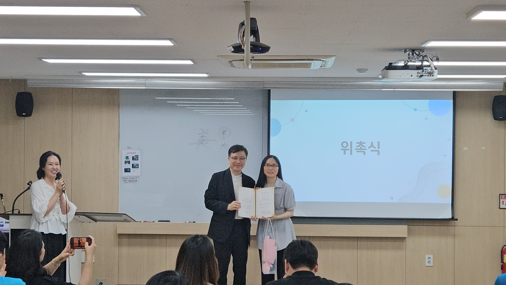
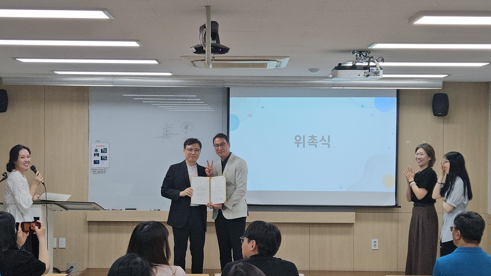
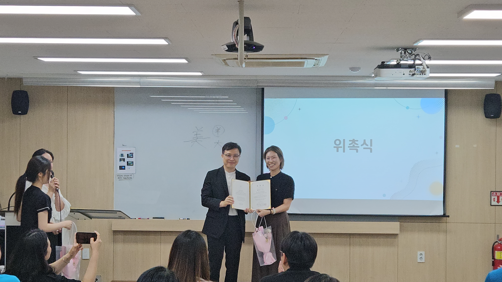
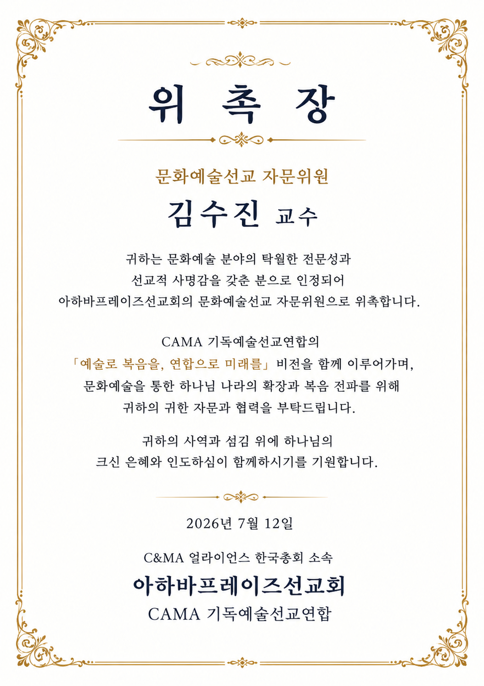
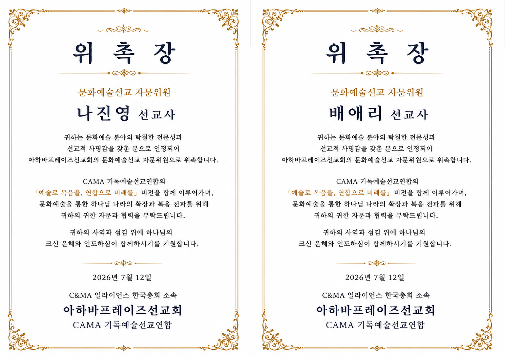

김수진 교수, 나진영 선교사, 배애리 선교사를 CAMA 문화예술선교 자문위원으로 위촉했습니다.
문화예술을 통한 복음 전파와 선교적 비전을 함께 세워가기 위해 귀한 자문과 협력을 이어갑니다.
Appointment Record
위촉 기록
김수진 교수, 나진영 선교사, 배애리 선교사 순서로 위촉식과 위촉장을 확인해 보세요.





김수진 교수, 나진영 선교사, 배애리 선교사를 CAMA 문화예술선교 자문위원으로 위촉했습니다.
문화예술을 통한 복음 전파와 선교적 비전을 함께 세워가기 위해 귀한 자문과 협력을 이어갑니다.
Appointment Record
김수진 교수, 나진영 선교사, 배애리 선교사 순서로 위촉식과 위촉장을 확인해 보세요.



